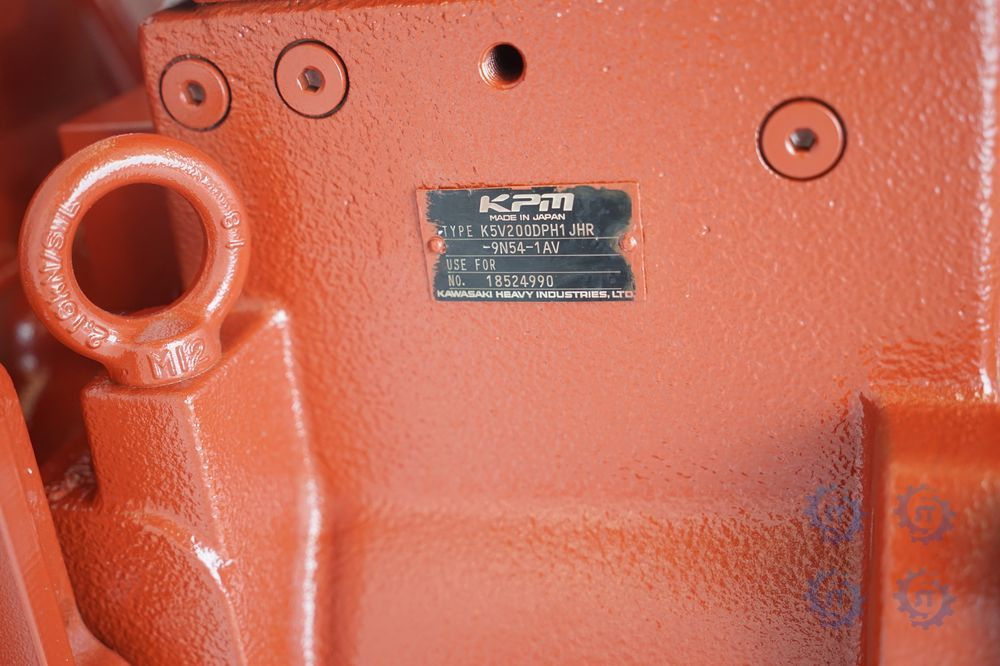
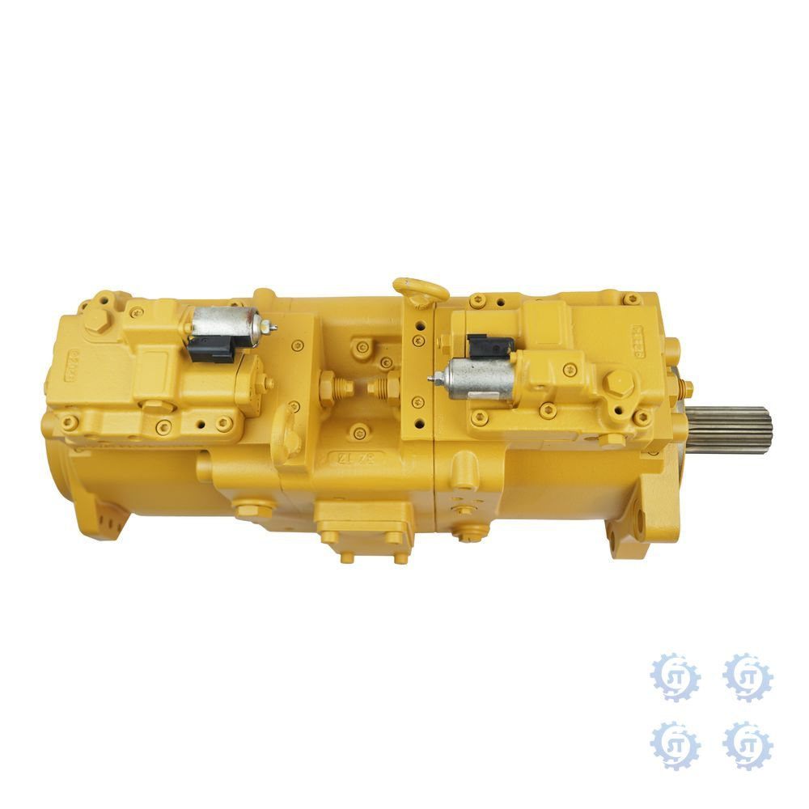
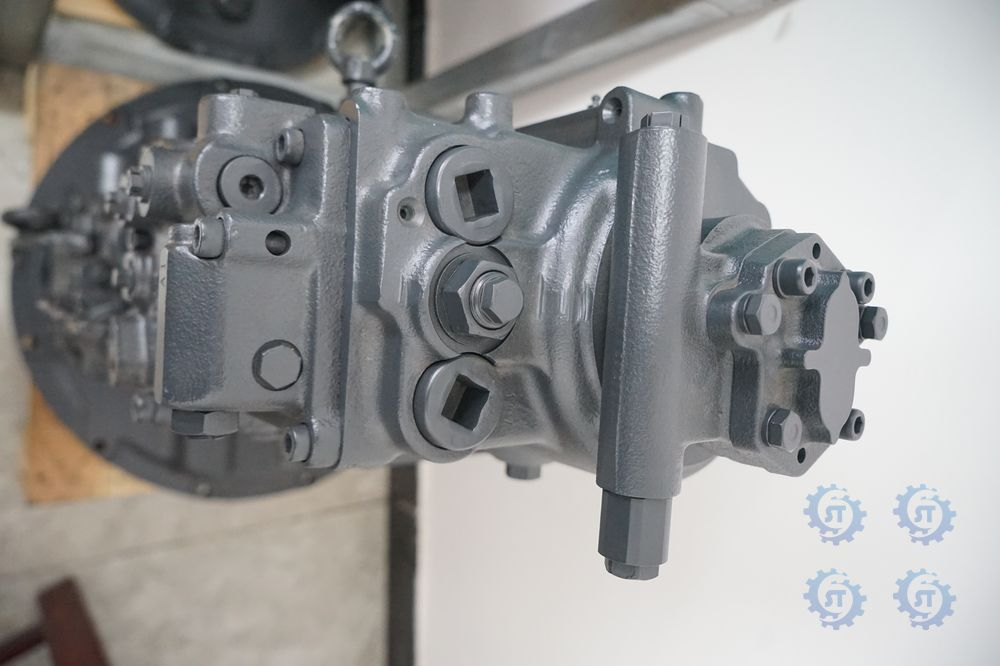

Genuine high-quality main pumps for Komatsu, Caterpillar, Hitachi, Handok and Kawasaki.



HPV145 hydraulic main pump assembly, available with two catalog numbers.
| Parameter | Value |
|---|---|
| Type | Axial piston main pump |
| Part numbers | 9169054, 9257309 |
| Warranty | To be confirmed |